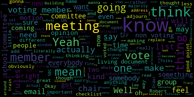

[Ruseau]
: I don't think be voting to adjourn a meeting, because you need a majority of the folks to adjourn. Sorry, I live on the train tracks. And I think that the end of the meeting, people are tired. And, you know, one of the things that has happened in open meeting law is that failures to properly adjourn a meeting, there's plenty of open meeting law violations around that. like whole town councils, the annual meetings, they have to come back together to vote to end the meetings, really dumb. So I just wanna make sure that the ending of the meeting is fully crystal clear. The only squishy thing here is that the beginning of the meeting, whoever's taking the role does have to have like a voting member, non-voting member on the piece of paper or the document they're doing. so that they can make sure there's a quorum of voting members to begin the meeting. So it's very doable. It's just a little more complicated than I think I'd imagined. So I don't have anything else other than this. If there's stuff people think needs to be added or changed, let me know.[Graham]
: Maybe one thing, I was just looking through our approved resolution to see if it was in there that the placeholder that you have around communications being directed to the chair, and I did not find it there, so I don't, it must exist somewhere in the ether, but I think the answer there is, you know, media requests for communication or comment regarding the SBC will be directed like via me so that the committee knows that if they get a press like request that if the request is about like speaking about what's happening on the committee that that should come to me so that I can work with the right people to make sure that that whatever we say is appropriate. I was also wondering whether I think public participation. I would like, I would personally like to see us adopt the same roles that we have for school committee around like you can speak one time on a matter for up to three minutes. So there's some specific language there in our rules document. I don't know how you all feel about that in terms of like, you know, I don't think we're gonna see a lot of public participation in this like phase, but I think at some point we will, you know, when we're making like feasibility decisions. And I'm just curious, like, can we sort of agree now, like what that looks like? And I'm just trying to pull up our rules document to grab.[Ruseau]
: I already got it, John.[Graham]
: Oh, you have it. OK. So I don't think that has to be the answer, but I think it is actually already documented. So we should work from it and say that that's sort of what we're proposing. So public comment will be limited to three minutes per individual and will be limited to those matters on the agenda. That's important because when we don't do that, we sort of bump into open meeting law issues. The chair may limit comment to two minutes based on the number of individuals wishing to speak. The chair will announce the time limit prior to the public comment period at every meeting. The public will also be encouraged to submit their comments in writing or by email or by emailing them to the superintendent. I would maybe say the chair. written comments will be forwarded to all members of the school committee. I guess I'm wondering, do we set up an auto forward situation? I believe that we'll have a general email box. Okay, again, and what we can do is set up like an auto forward so that if something is coming into that box, it is being distributed to everybody.[Ruseau]
: So I changed the chair to actually be the SBC email.[Graham]
: Yes. That's great. And then I don't think we need that last sentence.[Keene]
: No.[Graham]
: Thoughts about that from a public participation perspective?[Ruseau]
: Well, I like it. I mean, I think I've read that language before, so.[Keene]
: I think you want to take out email. I mean, or by mailing. I mean, that seems like if you were sending it via post.[Ruseau]
: Where am I looking at?[Keene]
: The public will also be required for your cursors. Writing either by email or by mailing. Oh, yeah. Um, I mean, because I guess I guess what the school can be to be a mailing address or how do you three get if someone wants to mail?[Ruseau]
: I mean, I'm fine with just email. Okay. Yeah. Uh, comments and writing by email to the SBC. Um, okay. I'll replace that with the name of the actual email address once we have one.[Graham]
: And then I would just say via auto forwarding. Um.[Keene]
: Am I muted? No, I'm not muted. Can I go back to number three? Yeah. And ask a non-elected official question.[Graham]
: Yes.[Keene]
: Since I have three elected officials, and Jenny, when you called, rolled, you say member, I noted at our meeting, we address superintendent, we address, obviously, out of decorum, Jenny as chair, mayor, what is the proper, what should members of the SBC be urged to address by the fellow members of the committee. So I have thoughts on that.[Ruseau]
: And, you know, well, Robert's Rules of Order does say that. But one of the most common mistakes about understanding Robert's Rules of Order is that literally all of the rules can just be changed on the fly by the chair. there's a set of rules of which can be completely thrown out the window at the blink of an eye, which, you know, if you haven't thrown them out the window, then we should be following them. But, you know, my personal opinions on this is that for subcommittees and, you know, I don't think we'll have committees at the whole kind of a thing for this particular, for the school building committee, but, you know, I personally prefer first names and just the collegiality that we'll have in a small group. I do think in a large group, when there's no public present and we're not making a big decision, you know, we're working through documents and, you know, I just, I tend to prefer more collegial, you know, collegial is not the right word, but, you know. Informal. Informal, thank you. But then, you know, we are being recorded and broadcast. So I'm very much open to always using, you know, the proper, you know, member, all the party member team, you know, I mean, we don't, there's a lot of benefits to both in my opinion. And it sometimes depends on who the folks are. that you're actually, who is the rest of the committee? So, you know, like if we don't have any kind of significant personality conflicts in the school building committee, I'll just, I don't know how else to describe it. Like everybody gets along with everybody, nobody's interrupting anybody, you know, being less formal seems real easy. If the chair has to wrangle the group, on a regular basis, then that becomes more, it becomes less, you know, Paul, stop talking is much less, you know, doesn't sound great compared to, you know, remember or so your time is up or, and I feel like we don't know that stuff yet. I'm all over the place, but that's just my thoughts.[Graham]
: I personally like that, I would propose that we write in here a rule that says like, we are residents and neighbors here in Medford. And as such, we will address each other based like on a first name basis, unless otherwise requested by a member of the committee. So if you want me to call you Mr. Rousseau, I'm happy to do that. But I think my strong preference is people call me Jenny. We're all friends and neighbors here trying to work hard to get something done. I just want people to feel like they're a part of a team instead of part of a body of elected people. Because we're not, right? We're appointed. So I don't know, that seems like, you know, maybe it'll work till it doesn't. But I don't know what you guys think of that.[Keene]
: I mean, it works for me because it also then while we there is hierarchy in the committee, because obviously we have a chair, but it's for me, as you were just saying, where we're not elected, where have been appointed. And I like the idea of trying to find trust amongst the committee seems to be on a more informal basis than a formality. That's just my opinion.[Ruseau]
: I'm sorry, Tracy, I hate to ask you to repeat that. The train was going by and I disconnected.[Keene]
: I was supporting what Jenny was saying, meaning that while we're not elected official and we are appointed, it seems like in order to establish a level of trust in the get-go, while there is hierarchy as we do have a chair, and there is obviously non-voting members on the committee. It seems to me, and I love the way Jenny started out, we are residents and neighbors working on behalf of the committee to do this hard work.[Graham]
: Yeah, okay. Aaron, how do you feel about that?[Olapade]
: I also agree. I think that there's going to be it is a long process and I think that the more that we I think feels equals as much as possible that allows for a certain sense of like. I think community strength, I think I prefer just because I think having certain titles for people is understandable and we want to show a certain amount of respect, but I also think that we want to operate as if we're one body and not where there's like a hierarchy where certain people's voices or votes are going to be have far more influence than another and others. for the most part, so I also agree. I think it's better to try to be as impartial in our communication as possible while also being respectful to people's titles and things like that. OK.[Ruseau]
: Sounds great. I did, well, I think it was while Tracy was speaking, I realized there might be two exceptions I just wrote in there. I don't know what you all think on that.[Graham]
: Yeah, I think that's fine. And if they don't like that, they can tell us.[Ruseau]
: That's correct, right.[Graham]
: Yeah. Tracy, the other question I had for you is like, I'm gonna make an assumption that you don't know what Robert's rules of order are. Maybe you do. But I think what would be helpful here is to like, I don't know, like what are like the most important rules can we write them down so that people aren't like, where do I even find what that means to be able to agree to it? So, I mean, I think in my mind, giving them a cheat sheet is good, but even in words, to me, one rule is that voting happens, on the committee when there is a motion to do something and a second and possibly debate on that subject. And I think we maybe don't need to get into like, you know, if there's too many motions on the floor, you know, you gotta stop and like dispatch of things. Like, I don't think we need to go there. But I think saying like, when we have to take a vote, somebody makes a motion, somebody makes a second, we have conversation and then we vote. And under the open meeting law, voice votes are loud, which means everybody, when everybody is in person, right? So we can just say all those in favor, aye, all those opposed, no. And as long as there's no question, that's fine. But at any time, any member can simply request a roll call vote. Like, I think that's an important structure for people to understand. Like, we're going to not call 25 people, like a 25 person roll every single time. But if somebody feels strongly that they need to know where people stand, that that's a possibility. I think the other thing about voting that I sort of am wondering about is like, do we call only voting members in the role or are we trying to like also record the sort of opinion of non-voting members?[Ruseau]
: It's a great question. You know, as a non-voting member, I actually, I don't personally feel like I need to make my vote known how I would vote if I had been a voting member. I think the reason I don't feel that way is that when there is, as in the item just above it, when there's debate, I mean, it's pretty uncommon that people are going to be speaking on a topic and nobody knows how they actually were gonna vote. And that's, in my mind, the role of the non-voting members is like, if I'm going to have any influence, it's going to be in what I have to say so that the voting members may choose to vote a different way or vote the way I want. So I don't really feel the need for us to record all the non-voting members' opinions. But obviously, when we go to the full committee, there can be a different opinion.[Graham]
: I think, you know, maybe another thing about motions that would be important to say is like any member may suggest an amendment to a motion and maybe we just say, and the chair will guide the group through the proper way to accept or reject that amendment. so that like, I don't need you all to know how to do that, but if that happens, I will handle it and we will like work through it and go from there. I'm just like looking through my trustee Roberts rules of order book here to see what else we're missing.[Ruseau]
: Well, I don't know how long it is. You're missing a lot, but that's because it's ridiculous.[Graham]
: Yeah, well, one other thing that I was just reading about is like, you know, there are typically like limits to like how often you can speak. So Robert's rule says you can speak twice on a topic for, well, where'd it go? Hold on. You may speak and debate twice on any debatable motion. on the same day, each time you may speak for up to 10 minutes. That is what Robert's Rules of Order says. I would propose that we amend that to be commiserate with what we're allowing the public to do in an event that things are out of hand, right? just so that people understand that like once we get to the point where like we'll have discussion and that's one thing once we get to the point where we're going to take a motion and vote like there is like diminishing there is sometimes sometimes diminishing return on like everybody talking exhaustively why they think the way they think when really like we just need to take the boat and let the boat go right so Obviously, that becomes a problem when things are contentious, but maybe that's a good place to start.[Ruseau]
: I put this one in here, Jenny G. It's actually something we frequently have even in school committee. And to me, it's always new members that are confused by this, but once the voting has begun, there is no motions allowed, no amendments, no conversation of any sort. And you can vote no and then, you know, Then talk about it or make a different motion, but it's just a constant problem even with a small group of seven so I do worry about a large group. Yeah, being like I got one more thing after we started to take the role.[Graham]
: The other thing that Robert's Rules of Order talks a lot about is like how to reconsider something if you feel like the group has made a mistake. And again, do we maybe just put something in there? Like if a member of the committee believes a mistake was made and would like to discuss a completed motion further, they simply need to alert the chair and the chair will like assist through that process.[Ruseau]
: Yeah. Yeah, I know. I agree, except I do think it's important to include the most important caveat there is the only members that may actually do that are those that voted for the thing. No, in the winning thing. So if a motion was on the floor and it passes, the only members that may in fact redo this are those that voted for it. If it fails, the only members that may do that are the members that voted for it against it.[Graham]
: Okay, that's a fair and important point because otherwise you're just going to recycle. Okay.[Olapade]
: Um, do we have any, um, like when it comes to like meeting, meeting minutes and like accurate minutes being taken, you know, these are all going to be recorded and we'd understand that. But have we decided if we're going to, like how we're going to go about having them running down, like who's going to be doing that?[Graham]
: I think we are required to publish and approve minutes for every meeting. And I think there is still some conversation happening about who will be responsible for that. So that is something I need to get with the superintendent on to make sure that we have an answer to that. I think the other thing that we might want to mention is like, if we're going to take the agenda out of order, that we need to make an official motion to suspend the rules and take the agenda out of order. And that's really because that's a choice that we're making that impacts like how the public can participate in that conversation. So if you were wait, if you knew that it was like the last agenda item, and we took it first, like you may miss it completely and not be able to talk about the things that you wanted to talk about. And so I think when it comes to making sure that we're appropriately hearing from the public, we want to make sure that we're You know, we just want to make sure that we are not doing that haphazardly, let's put it that way. I've reached the end of my Roberts Rules of Order book, and I feel like if we can like work through these, we're probably gonna be okay most of the time. Do you agree with that, Paul?[Ruseau]
: I do agree with that, yes. And as I say one too many times, these are living documents. We literally can change them on the fly in our meeting with a majority vote. Perfect is not a thing. I'm just going to say that.[Keene]
: Can I ask a question of the three of you? Sure. Often in my role as chair of nonprofit organizations, have my, the secretary put a lot of the items that are non-controversial on a consent agenda and we vote the consent agenda all at once. Is that something that typically happens in school committee or open meeting laws, et cetera? As you were talking about agenda and voting, that just popped in my head, Jenny.[Graham]
: Yes, we do that. We do that with certain items, usually like the minutes and things like that. So maybe we need to just say something like the chair will create an agenda and may elect to use a consent agenda to approve non-controversial items in an effort to ensure the meeting moves along. I'm thinking that we should move that number five, that we should move that up. And maybe number six, because those are like, if you only take a couple things away, those are good things to take away and maybe put them right after number two. Okay, what else are we missing? It's more than one page, but still seems pretty brief.[Ruseau]
: Yeah. The school committee rules can be bound in a book.[Graham]
: Okay. Anything else? We can come back if there is something else that we forget. The other topic for us to talk about that we haven't talked about yet is like, if we are thinking about the committee, what kind of onboarding activities and information do we want to make sure the committee has at their disposal? So, um, We talked to, you know, the three things I put on the agenda are tours, exemplar documents, and any additional training that people feel like they need, and anything else. So those are some questions that I had more to think through. I have had like less of an answer about that. that's something that is like maybe worth talking about as a group here as well.[Ruseau]
: Yeah, I mean, you know, I thought about this and, you know, one of the things that I struggle with a bit is, well, first of all, we're sort of onboarding as we go right now. Everybody is a current member. And so, you know, we might be able to just like, I'm sure we have a list of things we could say we should have on that list, but it feels more like it should be just a living document as we like, somebody, as we are doing meetings and we're like, oh, you know, if somebody knew, if somebody was just thinking and paying attention to like, a new person coming in today without this information, they're coming in in a month, I should say, without this information, Yeah, they really need it. So there's the onboarding of like, this is our set of rules that we just approved. This is, you know, this is the chair. This is the superintendent. Here's everybody's names. Here's our email addresses. Those things are basic things for a checklist, which I think we should draft, of course. But then thinking about making sure that they're effective and then they could be coming in in year four of this project for crying out loud. It makes me feel like that needs to be a living document. When we finish all of eligibility and somebody starts two months into the next phase, we may wanna like flush things off that list rather than saying, here's your 7,000 pages to read now that you're a new member. That's just my thoughts.[Graham]
: And are you thinking that we can, we would put that checklist right in here? Or are you thinking like we're going to assign somebody to do that and bring it back?[Ruseau]
: You know, I don't, um, I would rather just refer to it from here and have it be someplace else. Um, you know, cause I mean, you know, who would maintain it? I mean, We certainly can start one now and have a list of, you know, the things that are going to stay the same throughout the entire process. Payroll, you know, like the kind of thing you did if you were joining a company, then you sit at your new desk and you have no idea what ends up, even though you've got your account now.[Keene]
: Okay.[Graham]
: I guess me, I guess the chair, right?[Ruseau]
: Yeah. I mean, but, but. Oh, I like that. And then we can, you know, meet as needed when we realize, hey, you know, this is no longer what the current list looks like.[Graham]
: Yeah, okay.[Keene]
: Well, it seemed like one of the first things we need to do is what we did last week is have an onboarding of open meeting laws.[Graham]
: Yeah.[Keene]
: Yes.[Ruseau]
: Can you see my?[Graham]
: Yeah, we can.[Ruseau]
: You never know when I do that. So we have OML. We have Roberts. Well, I'm just going to say that. SPC rules. Yeah.[Graham]
: Issue an email address.[Ruseau]
: SBA process overview. Issue email address. Add to distribution list.[Keene]
: Jenny, you know the deal. Jenny, going back to MSBA process overview, the posting that you shared on Facebook or wherever you laid it out, where we are, it seems a good history lesson of how we got to this point now, and that might be part of that overview.[Graham]
: Yes, agree. And the other thing, you know, at some point soon, we'll have a website where all of this stuff can live. So it really could be just a matter of somebody from this team, like sitting and onboarding somebody and like walking them through those steps, right? Once it's all there, it gets pretty easy to be able to do that.[Keene]
: Yeah.[Graham]
: Okay.[Ruseau]
: Well, I don't know about a press release every time we add a new member. I mean, hopefully that doesn't happen often, but I do think.[Graham]
: Yeah, I don't think we really want to do that. There might be some like big changes, but.[Keene]
: One of the things that part of my onboarding for staff at my job, I work at Harvard, and Harvard is known for acronyms. And I wonder, in school committee world, are there acronyms that we need to make sure that everyone knows about, or understands, or an acronym cheat sheet, or something like that, so when people are using short term in reference to something people know what they're actually talking about. Yep, absolutely.[Ruseau]
: And I think that, Thinking about coming from this meeting and going to the full membership, I think my preference is that we actually, this is what we send them. And then that the checklist isn't, they don't approve the checklist. We want their feedback if they have ideas for more things, but it should just be such a living document that just changes on the fly as anybody and everybody thinks, oh, well, what about that? Rather than it being a policy that we have to vote on.[Graham]
: Yeah, I agree with that.[Ruseau]
: So I can certainly also, you know, if we're not gonna vote on this one, I'm not gonna vote obviously, but like, if this is not something we're sending to them for approval, then I can work on this list and making it look like something useful offline. But I don't know if we have anything else to add to this thing.[Graham]
: I don't think so. I can't think of anything else. What do you all think? I like the brevity, personally. It's not too much to wrap your head around.[Ruseau]
: Should we take the chair may limit to two minutes? This is the public comment. We want to keep that.[Graham]
: Yeah, that's the public comment.[Ruseau]
: It's not the members thing. It's down below. Okay, thank you.[Keene]
: Yeah. You scrolled up. Oh, up, down, whatever it is. Number five. See, I think. No. F. Is that what you're talking about?[Ruseau]
: Oh, yes.[Keene]
: Thank you. Yes, that was it. I just, right.[Ruseau]
: That's fine.[Graham]
: Okay.[Ruseau]
: It's like we've got something good here. I will You know, even though I assume that we all will make a vote emotion and vote for this. I will go through real quick and just even after the meeting and just make sure we don't have any typos or anything.[Graham]
: Okay. Just a quick question. Do we do we have any thoughts about. exemplar documents or districts that we think people should pay attention to? And I think that's a question we can ask the whole group, but I don't want the list to be so big and so long that it's like, I don't have time to sort of go through and find all those documents for all those folks, but it might make some sense for us to make connections with like Arlington, for example, they're like in the thick of their program. So, you know, maybe even like Arlington, Somerville, Stoneham, Winchester, I don't know.[Olapade]
: It's been pretty, has done a pretty good job, I think, at keeping their like website, for example, really up to date, I think really detailed.[Graham]
: Is that Stoneham you said?[Olapade]
: Belmont.[Graham]
: Belmont, okay.[Ruseau]
: Yeah. One more time, sorry. Stoneham.[Graham]
: Arlington.[Ruseau]
: Arlington.[Graham]
: Somerville.[Ruseau]
: It's very interesting as I looked around, I have very little time left.[Graham]
: Winchester.[Ruseau]
: Winchester.[Graham]
: And I think the appeal of Winchester, they've been done for a bit. Yeah. But they, started, I think, with something that looked like Medford High, so sort of interesting.[Ruseau]
: I think it looked better before.[Graham]
: But like they, you know, they renovated in place, I guess, as it were, so. Yes, yeah, they did. I think the other question is, is there a Volk district that is succeeding. So let's talk about the places that are having some trouble right now. But is there a VOC district in the area that is sort of succeeding through the process that might be interesting?[Ruseau]
: I don't know. I mean, there was.[Graham]
: Maybe we just write vocational question and we can open that up to conversation.[Ruseau]
: Mohawk, did they do one? That's not it though. There it is.[Graham]
: I mean, members of the committee may have some other ideas, but it would be nice for us to like, go off and, you know, identify who these districts are and sort of accumulate some links to like their relevant documents and that kind of thing.[Keene]
: Right. Okay. When you list any vocational schools, are there any other schools like Curtis Tufts that we want to be, that has integrated there into a high school? Somerville. Somerville did, okay.[Graham]
: Yeah.[Ruseau]
: Yeah, my subcommittee on that will be reviewing that, I forget, is it next week maybe, the week after? Because they did do that and, I don't know, I have too many meetings, I can't find it. It's not tomorrow, I hope, no.[Keene]
: So this is also a question as a non-school committee. not necessarily on-boarding but I guess as you list these exemplar school committee building committees are there other areas in the school committee psyche that non people that are you know are there are there places to go in terms of reading making sure you're following them on Facebook or something like that, that to be in the know of what's happening across the district or in Massachusetts in terms of school committee related issues that pertain to buildings?[Graham]
: So MSBA has a Facebook page. So we could like list that and we could also I think that's a good point. I think that's a good point. I think that's a good point. I think that's a good point. I think that's a good point. I think that's a good point. I think that's a good point. I think that's a good point. I think that's a good point. I think that's a good point. I think that's a good point. I think that's a good point. I think that's a good point. I think that's a good point. I think that's a good point. I think that's a good point. I think that's a good point. I think that's a good point. I think that's a good point. I think that's a good point. I think that's a good point. I think that's a good point. I think that's a good point. I think that's a good point. I think that's a good point.[Ruseau]
: I think that's a good point. I think that's a good point. I think that's a good point. I do wish they were a little stricter once you weren't a school committee member, but that's.[Graham]
: had some former school committee members wreaking havoc but um yeah okay. I think those would be like the two big things and then certainly like if there's something that seems relevant, we can share.[Keene]
: And speaking of school committee, Jenny, you will let this committee know, A, obviously, if something is coming before the school committee. But are there times when you think it'll be worthwhile that some members or all the committee is present or has some showing at a school committee meeting?[Graham]
: Maybe. sort of do our best to let you know when there's topics that are relevant. Like there's one, you know, I think on the 20th, we'll have a meeting where we'll be talking about, the school committee will be talking about potential expansion of vocational programming. And that might be of interest for people to listen in on, albeit not required for you to be there. But I think there probably are some big gate style meetings that folks who are able to join would be helpful. So I can certainly let people know that. as it happens. But I would say attendance is not mandatory to those things. What else? Are we done an hour in advance?[Keene]
: Yes, going back to the onboarding should we make any reference to cadence some meetings or or how often giving people the meeting schedule that probably be really helpful. Yes.[Ruseau]
: Yeah. I mean, the actual act of deciding, I mean, of selecting an additional member is not going to be in here. And I think it's also not going to be, there's not going to be one path. I don't know if Jenny spoke about it in our last meeting.[Graham]
: I believe that is all left to the chair via the resolution.[Ruseau]
: Right. So, you know, like if we lose, you know, some kind of specific kind of engineer, and we have another specific, that same kind of engineer in the queue of people who applied, then, you know, the chair will probably want to replace them with that person. So it's hard to formulate, be formulaic about that stuff. Yeah, so. I mean, obviously that, you know, when the chair's asking somebody if they want to take a seat, you know, the meeting schedule will be important so that they can stay with the meetings. But yeah.[Graham]
: Okay.[Ruseau]
: So I'm not a voting member, but I'll just, I mean, actually there's two school committee members here. I don't have to tell you all how to make a motion.[Graham]
: So is there a motion to approve these rules and onboarding checklist to the SBC?[Keene]
: So moved.[Graham]
: And is there a second? Seconded by Member Olapade. So roll call. Member Olapade? Yes. Oh, sorry, Aaron. Oh my, Tracy Keene.[Keene]
: It's gonna be a hard habit to break, Jenny.[Graham]
: I know.[Keene]
: Yes.[Graham]
: And Jenny and myself, Jenny Graham, yes. So three in the affirmative, zero in the negative. We will report this out to the full committee next week. Is there a motion to adjourn?[Keene]
: So moved.[Graham]
: Motion to adjourn by Tracy Keene, seconded by Aaron Olopade. Roll call. Aaron Olopade?[Keene]
: Yes.[Graham]
: Tracy Keene?[Keene]
: Yes.[Graham]
: And Jenny Graham? Yes. Three in the affirmative, zero in the negative. Meeting is adjourned.[Keene]
: Good night, everyone. Thank you, everybody. Bye.[Graham]
: Thanks, everybody. Bye-bye.|
total time: 13.87 minutes total words: 2101  |
total time: 22.88 minutes total words: 2733 |
total time: 1.12 minutes total words: 229 |
|
{kind=link}
{kind=link}
{kind=link}